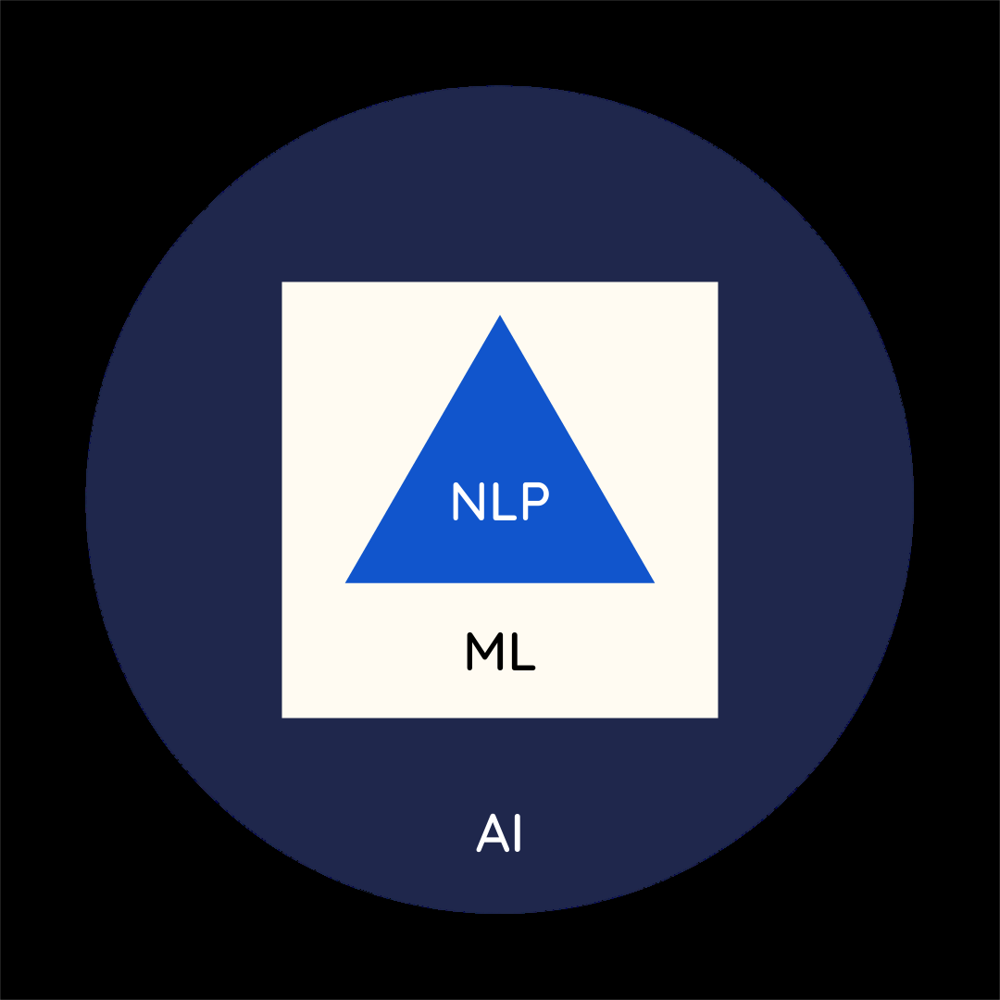

ML/Data Science article 2
Contents
ML/Data Science article 2#
Delivering Success in Natural Language Processing Projects: Part One#
Publisher: Medium
Publishing Date: Mar 11, 2022

A common application of NLP — chat-bots.
This is the beginning of a five-part series where I aim to demystify Natural Language Processing (NLP) through a key learning tool that I would call the NLP toolbox. Enjoy!
A Simplified Background on Natural Language Processing (NLP)#
At this point, it is helpful to define some key concepts and show how they relate.
The concept of Artificial Intelligence (AI)#
What is AI?
Artificial Intelligence, simply put, is the quest to make machines achieve general intelligence, where these machines can
receive data in varying size and complexity,
process it into generalized information and
use this information to create ideas and act without human assistance.
The concept of Machine Learning (ML)#
What is ML?
Machine learning is a subset of artificial intelligence that focuses on the processing of data into information. There are two ways that machine learning produces information:
A human creates a pattern and the model evaluates how well the data fits to the pattern based on statistical inference
The model creates the pattern and the model and human evaluate how well the data fits into the pattern
Approach 1: Bayesian/Frequentist Statistical Modelling
These types of models can have
static estimated parameters when using an unchanging fixed dataset, or
dynamic estimated parameters.
For models with dynamic estimated parameters, an objective/loss function is used that minimizes the error in the model. In this case the variables/features stay fixed, but the observations/instances change over time, altering the data distribution in the process.
These types of machine learning models can be great in that they can be interpreted by people. However, they do not do well on unstructured data and may be limited by the researcher’s choice of variables and research objectives — they have to attempt different variable combinations to get statistically valid results that also satisfy research objectives.
Approach 2: Deep Learning
These types of models have only dynamic estimated parameters, in part, because the model itself selects variables (inputs into a paticular neuron), and also experiments with different combinations of these variables to get optimal estimated parameters.
The only key criteria that the human can control are the hyper-parameters that include the
activation function — gives the first set of estimated parameters which are usually normalized and it tends to be non-linear,
loss function,
model selection metric — i.e. we say that the model has succeeded in its task and it can stop training when a certain threshold of the model selection metric is used,
desired dimensions of the output
number of epochs — the number of times the model will go over the data in order to identify the patterns.
A great benefit of this approach is that this model type is able to handle large amounts of unstructured data very well. However, because the variables and the parameter estimation method is unknown, interpreting how it obtained its results becomes very challenging.
N/B:
Natural Language Processing is an application of Deep Learning, alongside Computer Vision — think of Computer Vision as the “eyes” of the computer and Natural Language Processing as the “ears and mouth” of the computer. Both applications specialize in unstructured data, which is increasing in size as more and more people communicate on many digital channels today.
The concept of Natural Language Processing (NLP)#
What is NLP?
Natural Language Processing is a branch of Machine Learning concerned with teaching computers how to recognize patterns in communications data generated by humans and/or use patterns learned to generate responses for human audiences.
Relating AI, ML and NLP#
The relationship between the 3 concepts can be visualized as shown:

A visual representation of how AI, ML and NLP are related.
Mental Scaffolding#
First things first:
We are unique people learning in a dynamic world.
It is no secret that the path to learning is not the same for everyone. It can be incredibly challenging for some and quite straightforward and smooth for others.
Quick hacks can be great when you want to cram key information before an important meeting where you have to have all the answers. However, if you are in the world of tech, you know that new concepts, ideas and tools are being created rapidly — this means that in a day or a couple of weeks, what you crammed for that meeting may be irrelevant by the time you are ready to present.
You need to understand key underlying concepts, so that your knowledge can stand the test of time and these concepts can be applied and/or combined in new ways. Use of meta-tools can help people to understand technical concepts and apply them in the real world.
Scaffolding is a learning theory initially conceived by Vygotsky where
a learner uses structured support provided by a teacher or more advanced student
which is used to learn a challenging concept, slightly above their level of understanding
until the student no longer needs the support, enabling the teacher/more advanced student to fade away
It is important to note that
Just like scaffolding can be provided by a teacher to make the learning process faster, the learner can create for themselves and others their own scaffolding.
As part of my Delta Analytics fellowship, I had to complete a multilingual NLP project (which I had never done before) and present my work in a short amount of time — I had to have tools that could help me understand the NLP concepts that I was struggling with and at the same time structure my project. Even with an incredibly helpful coach, I had to figure out stuff for myself.
I had no choice; I had to create my own mental scaffolding.
My scaffolding was the NLP toolbox, which I created to help myself and others seeking to understand and implement an NLP project — end-to-end. After all, understanding and implementing NLP projects is crucial to their success.
—
The NLP toolbox is a collection of concepts, tools and ideas available for building applications that can handle real-world challenges around understanding content from all over the world.
It can be used for any NLP task such as sentiment analysis, translation, transcription, audio synthesis etc.
This metaphorical toolbox, is what we will be unpacking in the remaining part of the series. Read the next post here!